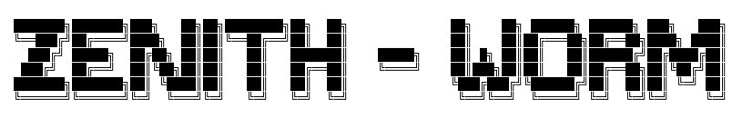
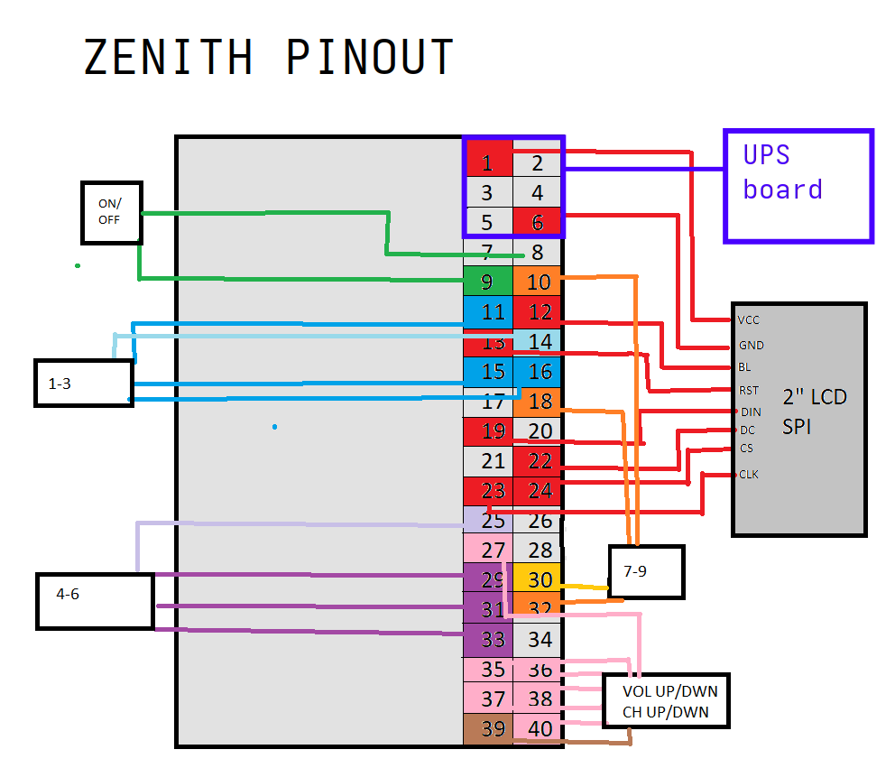

June 16, 2025
Introduction:
A vintage CRT tv remote, salvaged from the e-waste bin at my local waste transfer site. Gutted and repurposed, fitted with a 2 inch LCD, UPS battery pack, and my own momentary switches making all the original
buttons functional. Mainly just built it to house some programs Ive been making as practice, just for fun.



Software:
On system boot up, I have my main menu script scheduled to open. This menu is navigated by channel up and down on the remote which cycles through the different programs I have made. Pressing enter will open the selected script and then the newly opened script will in turn terminate the main menu. Power button from any of my programs will do the reverse and relaunch the main menu program, which will then terminate any other script. This keeps things from getting bogged down with too much running at once and allows me to keep all my code neat and tidy in there own seperate files. Opened and closed as needed. I put a lot of work into these programs and also the unique animations of each one in the main menu. Kind of going along the artistic choice/theme of "bad things happening to hands" for the animation.


A virtual keyboard I built from scratch to enter in wifi/passwords using nothing but the buttons on the zenith


An mp3 player I'm making. Zenith has no external speakers so this requres a bluetooth headphone connection
video tour